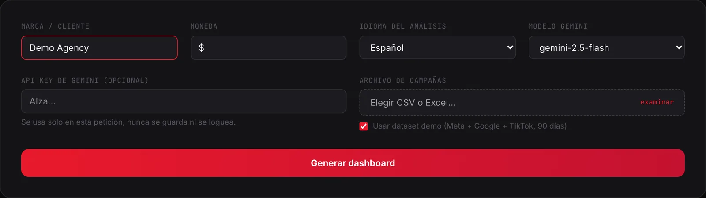
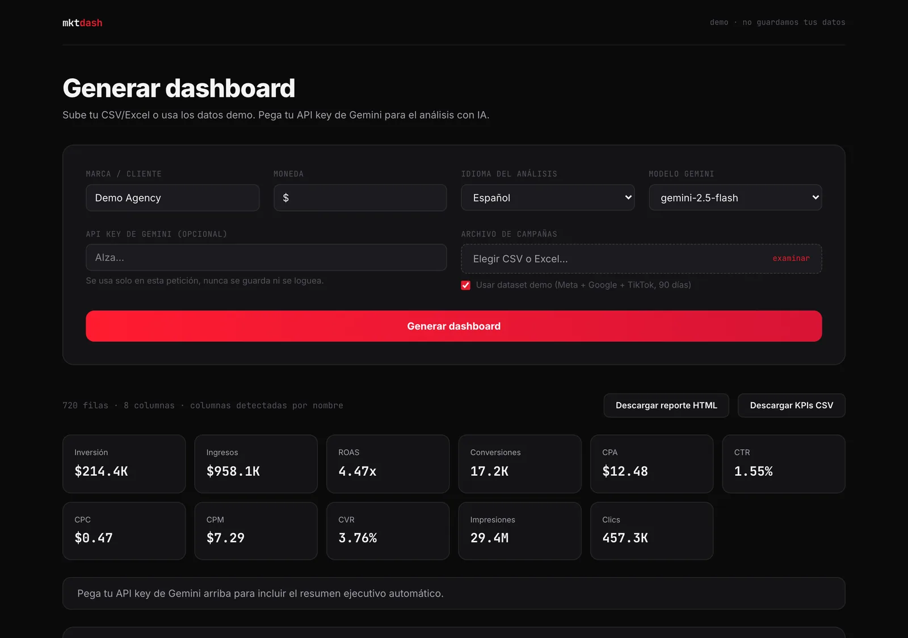
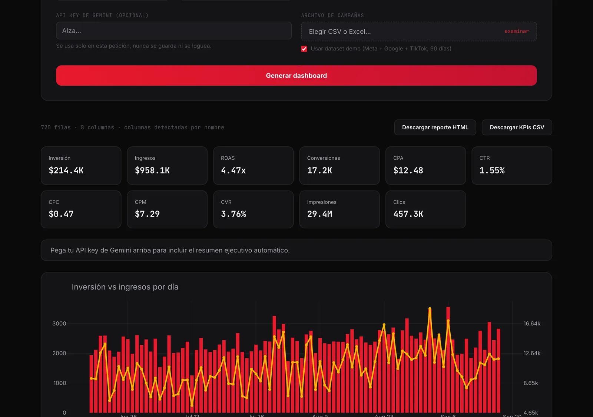
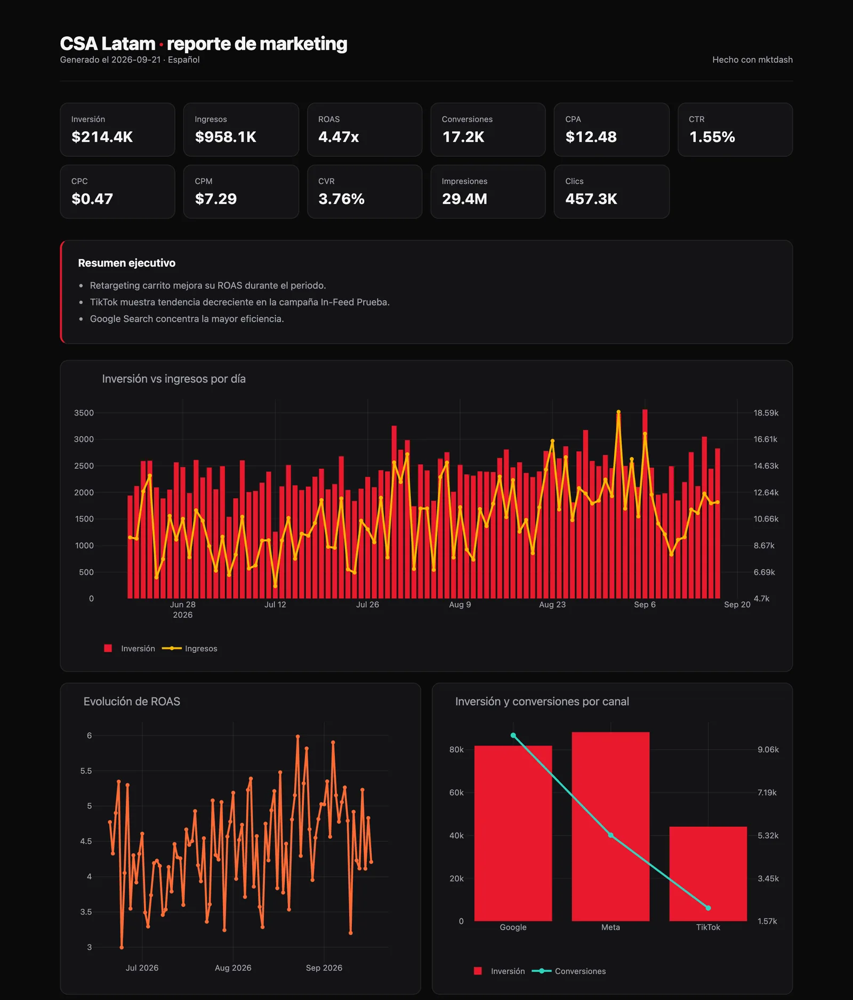

Em agência, o relatório mensal é sempre o mesmo ritual: abrir o export do Meta, o do Google, colar tudo no Excel, montar tabelas dinâmicas, conferir se os números batem, fazer os gráficos e escrever a análise. Três horas depois você tem algo que o cliente olha por cinco minutos.
Construí uma ferramenta para acabar com esse ritual: mktdash. Você envia o arquivo de campanhas e em segundos tem KPIs, gráficos e um resumo executivo escrito por IA, tudo exportável em um único HTML com a marca da sua agência.
O problema real não é fazer gráficos
Fazer um gráfico é fácil. O problema é tudo o que acontece antes: cada plataforma exporta colunas com nomes diferentes, em português, inglês ou espanhol, e cada cliente pede métricas diferentes. A parte cara do relatório é a tradução: entender qual coluna é o quê, calcular os KPIs corretos e contar a história com esses números.
É aí que a IA é perfeita para metade do trabalho e perigosa para a outra metade.
Como é na prática
Este é o fluxo completo, com capturas reais da ferramenta:

O resultado: onze KPIs calculados pelo motor determinístico e, com API key, o resumo executivo escrito por IA.

Os gráficos são renderizados no navegador e continuam interativos: zoom, hover e leitura de cada ponto.

E tudo é exportado como um relatório HTML autocontido, com a marca do cliente, pronto para enviar por e-mail ou imprimir como PDF.

A arquitetura: IA para entender, código para calcular
O erro comum é pedir para um modelo "gerar o dashboard". Modelos de linguagem escrevem texto convincente, mas não são confiáveis para calcular. Um ROAS errado em um relatório de cliente é um problema sério.
Por isso separei as responsabilidades:
- O Gemini faz o que faz bem: lê os nomes das suas colunas mais cinco linhas de amostra e deduz o mapeamento (por exemplo, que "Inversión" é o investimento e "Campaña" é a dimensão). Depois lê a tabela de KPIs já calculados e escreve o resumo executivo.
- O Python calcula tudo: o motor em pandas computa investimento, receita, ROAS, conversões, CPA, CTR, CPC, CPM e CVR. Os gráficos saem com Plotly. Zero números inventados.
A regra é simples: a IA interpreta e narra; o código calcula. Se o modelo falhar ou não houver API key, o sistema continua funcionando com detecção de colunas por nome e sem resumo.
O que aprendi construindo
- Nomes de colunas são um caos. O mesmo dado se chama
spend,Cost,Inversiónouimporte_gastado. Um bom mapeamento resolve 80% da fricção de adoção. - As pessoas não confiam no que não podem editar. Mostrar qual coluna foi mapeada para qual campo (e permitir corrigir) vale mais do que qualquer promessa de precisão.
- Os dados vêm sujos. Moedas com símbolos, vírgulas como decimais, datas em formatos diferentes. A validação é metade do trabalho.
- O resumo executivo é o que vende. Os gráficos já existiam na plataforma de anúncios; a tradução para decisões é o que economiza tempo.
Como replicar
O stack é curto: Python, pandas, Plotly e a API do Gemini. A versão local tem cerca de 400 linhas mais o motor de métricas; a versão web adiciona FastAPI e Next.js.
Se você quer montar algo assim na sua agência ou equipe, precisa de três coisas: um export limpo de campanhas, uma API key do Gemini e decidir quais KPIs importam para o seu cliente. O resto é encanamento.
Se isso te for útil, publico aqui as decisões técnicas e de negócio por trás do que construo. E se quiser levar isso para a sua equipe, me escreva.